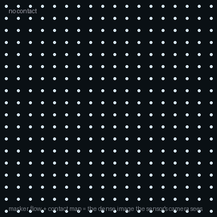

Vision fails at exactly the place manipulation cares about — the contact, hidden the instant a finger lands, with force invisible to any camera. Touch reports it: contact shape, force, and slip, in the dark and through occlusion. Vision-based tactile skins, slip control, visuo-tactile fusion, and force control — from first principles, drawn live and grounded in the ICRA / IROS / CoRL / RSS and CVPR 2026 corpora.
Five ideas, each a live diagram then plain words — why vision goes blind at contact, how a camera-in-a-gel senses touch, feeling slip, fusing sight and touch, and commanding force instead of position. Each has a ‘the actual math’ toggle.
wrist force/torque sensors + impedance control let robots regulate contact force, not just position.
GelSight-style sensors turn a camera on a soft gel into a dense tactile image — touch becomes a vision problem.
self-supervised and sim-to-real tactile representations transfer across sensors and tasks.
vision + touch fused into manipulation policies for insertion, in-hand rotation, and deformable handling.
VLMs reason over tactile signals, and CVPR work synthesizes touch, contact, and haptics from vision — the families below.
A camera is a wonderful sense at a distance, but it fails at the one place manipulation cares about most: the contact. The moment a finger lands, the finger itself blocks the view of what it’s touching — and force, the quantity that decides whether the grip holds, was never visible to any camera.
Touch fills exactly that gap. A tactile sensor reports what is happening at the contact — how hard, where, which way it’s sliding, what the surface feels like — and it works in the dark, under occlusion, and on transparent or shiny objects that defeat vision entirely. It’s the sense the loop is otherwise missing.
Optical sensing loses the contact: the fingertip occludes it, and contact force never projects to pixels — it is unobservable from vision alone.
A tactile sensor measures local quantities directly at the interface: normal/shear force, contact geometry, and incipient-slip signals.
The breakthrough that made touch practical is almost funny: point a small camera at a piece of soft rubber. When the rubber presses against an object, it deforms to the object’s shape, and the camera films that deformation from the inside.
That gives a dense contact image — not one force number but a whole map of where the skin is pushed and how hard. A network reads it into contact geometry, force, and slip. It’s why vision-based tactile sensors took over: touch became a rich image, and all the machinery of computer vision applies to it.
A soft skin deforms d = g(contact shape, force); a camera images the deformation (markers or surface), and a network inverts fθ: image → {force map, contact geometry}.
The output is a dense field, not a scalar — so vision architectures (CNNs, transformers) transfer directly to touch.
Holding an object is a control problem: grip too lightly and it slips, too hard and you crush it. The elegant solution is to grip lightly and react — because an object about to slide announces it first, with a burst of tiny tangential shear and micro-vibration at the contact.
A tactile sensor feels that incipient slip a fraction of a second before the object actually moves, and the controller tightens just enough to hold. Reacting in milliseconds to a signal that never reaches a camera is exactly the kind of control that makes touch indispensable.
Slip = tangential displacement at the contact with the normal force roughly unchanged; incipient slip shows as rising shear / micro-vibration before gross motion.
Grip control raises normal force until the friction bound holds: required ‖f_t‖ ≤ μ f_n — react before, not after, the object moves.
Touch doesn’t replace vision; it completes it. Sight sees the whole scene and gets the robot roughly to the target, but it blurs at close range and is blocked the moment contact begins. Touch is the opposite: exquisitely precise, but blind to anything it isn’t currently touching.
So the winning pattern is fusion: use vision for the coarse, global approach and touch for the fine, local finish — the last millimetre of an insertion, the exact seating of a part. Each sense covers precisely where the other fails, which is why the strongest manipulation systems use both.
Vision gives a global, low-frequency estimate; touch a local, high-frequency one — fuse them weighted by their uncertainties (e.g. a factor graph or Bayesian filter).
Even binary, low-resolution contact signals sharply reduce pose error under occlusion when fused with RGB-D.
A robot that commands only position is brittle against contact: aim a hair too high and it floats above the surface; a hair too low and it gouges or jams. Real contact tasks — wiping, polishing, seating a connector — need the robot to command a force instead, and let its position comply to whatever surface it meets.
This is force (or impedance) control, and it’s only possible if the robot can feel force. Given touch, the robot follows an uneven, uncertain surface by pressing with a target force rather than chasing a target point — the control principle underneath every contact-rich skill.
Impedance / force control commands a target wrench and lets motion comply: F = K(x* − x) with a force target, instead of tracking x* rigidly.
Contact-rich control regulates force through mode switches (stick/slip/separate), which requires measuring force — the sensor closes the loop.

The main sensing choices, in one table — a single force/torque reading, a dense vision-based tactile image, or a soft skin over a whole surface.
| What it measures | Resolution | Best at | The catch | |
|---|---|---|---|---|
| Force/torque sensor | net force & torque at a joint or wrist | one 6-vector | overall interaction force, compliance | no spatial map — can't tell where or how it touched |
| Vision-based tactile (GelSight-style) | a dense image of skin deformation | hundreds of taxels | contact geometry, slip, texture | optically delicate; limited by frame rate |
| Soft / distributed skin | pressure over a large area | many low-res taxels | whole-body contact, safe HRI | hard to calibrate; wiring & bandwidth at scale |
Every family below leans on one or more of these — the recurring reasons touch is worth adding.
Touch works in the dark, through occlusion, and on transparent or shiny surfaces — reporting the contact a camera physically cannot see.
Feeling incipient slip lets a robot hold objects with the lightest safe force and catch a slide before it becomes a drop.
Friction, stiffness, texture, and weight fall out of contact dynamics — so a robot adapts to objects it has never handled.
Force feedback completes insertions, assemblies, and wiping that pure position control jams or floats through.
Distributed skins detect contact anywhere on the body, and force control yields on contact — the basis for working safely beside people.
Fourteen families, each with the approaches and real papers — robotics (ICRA/IROS/CoRL/RSS), vision (CVPR 2026), and the overlap. Touch is a robotics-led field; vision contributes inferring and synthesizing touch. Jump to any:
A robot needs to know the exact shape of what it is touching, how hard it is pressing, and whether slip is starting — but the contact is hidden inside the gripper. A single force number from a wrist sensor gives no spatial map. What is needed is a picture of the contact from the inside, dense enough to read geometry, force, and slip simultaneously.
Point a camera at a soft gel skin and read the contact from how the skin deforms — a dense image of where and how hard it touched. This is the dominant modern tactile sensor because it turns touch into a rich picture.
Work here is cross-sensor transfer, self-supervised features, and pairing touch with language models.
Tactile sensing through vision requires learning what texture, compliance, and geometry look like from the sensor's viewpoint—without expensive ground truth labels. Sparsh bootstraps these representations by predicting multiple views of the same surface contact, forcing the model to capture invariant properties of touch. When the sensor moves or the lighting changes but the material stays the same, self-consistency teaches the network what 'softness' or 'roughness' actually means in pixel space.
The method uses a vision encoder to embed tactile images, then applies contrastive learning where augmented views of identical contacts push embeddings together while different contacts push apart. Multi-view reconstruction acts as an auxiliary task—predict how the contact will look from a rotated angle without ever seeing rotation labels. The resulting embeddings separate materials, compliances, and surface properties in a learned metric space, enabling downstream tasks like material classification and deformability estimation with minimal labeled data.
Touch and language both describe the same world—velvet feels soft, metal is cold, rubber grips. Octopi bridges this gap by training a tactile-vision-language model that reasons jointly about contact images and textual descriptions of material properties. The model learns that certain pixel patterns in a tactile sensor correlate with specific words humans use to describe surfaces, enabling tactile images to be queried with natural language and vice versa.
A transformer backbone encodes tactile RGB-D images from the sensor while a language encoder processes text descriptions. A cross-modal alignment loss ensures that 'soft foam' text embeddings sit near foam-contact image embeddings in a shared space. Once trained, the model can retrieve properties from touch ('what is this material?'), explain touch in words ('describe how this feels'), and even answer reasoning questions about physical interaction ('can this grip this object safely?') by grounding language in learned tactile semantics.
Force prediction from a tactile sensor depends on understanding how material deformation maps to loads—but this mapping varies between surfaces and sensor geometries. Instead of training a new model for each setup, TransForce learns a sequence of image-to-image transformations that map tactile observations from one domain to another, creating a bridge between sensors and materials. The key insight is that the 'style' of a contact image (which sensor, which material) is separable from the 'content' (the actual deformation pattern encoding force).
A sequence of vision transformers progressively translates tactile images from a source domain (sensor A on material X) to a target domain (sensor B on material Y), stripping away domain-specific visual artifacts at each step while preserving deformation structure. Once translated, a shared force-prediction head trained on target data can decode forces. Domain randomization during training ensures the translation learns invariant deformation patterns rather than memorizing specific surfaces, allowing transfer to new sensor-material pairs with minimal retraining.
A tactile sensor measures local surface deformation; different materials deform differently under the same applied force. ACROSS explicitly models this by learning representations centered on deformation geometry—how the contact surface bulges, wrinkles, or flattens. By grounding representations in physical deformation rather than raw pixel patterns, the model can generalize across changes in lighting, sensor wear, and contact angle.
The method extracts geometric features from tactile depth maps: local curvature, contact pressure distribution, and surface tilt. A deformation encoder projects these into a latent space where similar material behaviors cluster together despite visual differences. Cross-modal alignment with vision and language further enriches the representation—images and descriptions of similar deformations anchor nearby points in the space. The geometry-first approach yields representations reliable to sensor noise and capable of few-shot material transfer.
When a robot touches a surface it learns local properties, but needs to know where on the visual scene that touch corresponds to. This paper inverts the usual sensorimotor loop: given a tactile measurement at an unknown position, infer which pixels in the camera image correspond to that contact. The robot builds a semantic map of the scene where touch tells it 'this fuzzy region is fabric' and 'this shiny region is metal' even though the visual appearance alone is ambiguous.
A vision-tactile alignment network learns a cross-modal embedding where tactile feature vectors (encoding material properties from touch) and image patch vectors occupy the same space. During inference, when the robot contacts an unknown surface, the tactile encoding queries the image embeddings to find the closest matching region. The model is trained on paired touch-vision data where tactile contacts are spatially registered to image coordinates, learning to match material signatures across modalities.
A rigid point sensor reports force at one spot; a whole robot arm needs contact information over its entire surface — so it can detect a collision at any point, hold a deformable object without breaking it, and bend around obstacles. Covering a large curved surface with rigid electronics that survive repeated impacts while staying calibrated is the hard part.
Compliant sensors deform elastically under contact, and embedded sensing (capacitive, optical, magnetic, acoustic) reads that deformation — enabling dense skins that rigid point sensors can’t provide.
The push is durability, hot-swappable skins, and manufacturable whole-body coverage.
Current tactile sensors require custom mounting, calibration, and firmware integration per robot. AnySkin proposes a universally attachable soft skin that communicates via standard interfaces, letting any robot add touch sensing without re-engineering. The skin itself uses embedded markers or visual deformation patterns detectable by standard cameras or even the robot's own vision system, avoiding dedicated tactile hardware.
The sensor consists of a thin, compliant silicone layer embedded with fiducial markers or color-coded elements. When the surface contacts an object, the deformation shifts these markers, detectable via any RGB camera positioned near the contact region. A learned mapping from marker displacement to contact location and force magnitude requires only camera data, no proprietary electronics. This modularity allows the same robot to use different skin thicknesses and materials for different tasks, swapping them like end-effectors.
A robot arm with integrated soft skin can sense its own shape and external contacts simultaneously. ConTac embeds the arm itself as a proprioceptive sensor—internal camera or light patterns track how the skin deforms under self-collision or external touch. The robot learns its own body layout through this skin sensing, enabling compliant contact manipulation without explicit force sensors.
Stretchable silicone with embedded color markers or infrared markers wraps the arm. As the arm contacts obstacles or moves in constrained spaces, the skin deforms, shifting marker positions. An internal or arm-mounted camera observes these changes. A neural network maps marker configurations to contact location and magnitude on the arm surface. Kinematic coupling ensures the predicted contact location relative to the arm frame tells the controller what external force is acting and where, enabling reactive compliance without dedicated F/T sensors.
Acoustic resonators are well-understood from musical instruments and architectural acoustics. This work applies the principle to tactile sensing: embed tiny hollow chambers in a soft sensor and listen to how contact changes the resonant frequencies. Different materials dampen sound differently, and contact stiffness alters the effective chamber shape, creating a fingerprint. The approach is miniaturizable and silent, valuable for stealth robotics.
Soft silicone or elastomer housings contain small air cavities tuned to specific resonant frequencies. A piezo speaker emits a frequency sweep into the chamber while a microphone records the response. Contact with an object changes the acoustic impedance at the sensor surface—soft rubber absorbs more energy than hard metal. A spectral analysis of the resonance peaks reveals material damping and stiffness. The approach requires no camera, no custom electronics per sensor, and works in the dark or occluded scenarios where vision-based tactile sensing fails.
Packing boxes densely into a bin requires judging when pressure is sufficient to hold an item without crushing it. Tactile feedback teaches the robot when it has 'got a good grip' by reading surface pressures across its gripper or fingers. RoboPack learns a model of how items respond to different pressure profiles, enabling tight packing without damage.
Tactile pressure arrays on gripper fingers stream real-time contact pressure data. A dynamics model predicts object slip and damage risk from applied pressure distribution. During packing, the robot increases grip pressure until tactile feedback indicates secure holding without high localized peaks that would damage. The model is learned from demonstration data where humans pack items at different tightness levels, annotated with damage outcomes. Tactile feedback closes the control loop, adjusting pressure in real-time as the gripper positions or crushes items.
Knowing total force at a wrist is useful, but it gives you a single 6-vector — no map of where force is applied, and no signal when fingers are the only contact. Inferring force from motor current avoids a dedicated sensor but confounds friction and inertia with real contact forces. The challenge is getting a clean force estimate from an indirect signal, across speeds and objects.
Measure — or infer — the reaction forces and torques of an interaction, from load cells, strain gauges, or even motor currents. It reveals interaction dynamics that contact pressure alone can’t.
Sensorless force from current and vision-to-force prediction are recurring tricks.
Underactuated grippers have fewer motors than fingers—they passively conform to object shape through mechanical linkages. This trades control for simplicity, but sacrifices force feedback. This paper adds learned force estimation by instrumenting the gripper with minimal sensors (only joint angles and motor current), then using deep learning to infer contact forces despite the underactuation. The model learns that passive finger motions encode information about object compliance and contact force.
A neural network takes joint angles and motor current measurements as input and predicts contact forces at each finger. The network is trained on data from an underactuated gripper where ground truth forces come from occasional direct measurement or simulation. The key insight is that the joint trajectory and current draw contain signatures of contact forces—stiffer objects pull harder against the passive springs, changing motor load. A recurrent network captures temporal dynamics, learning to infer forces from how the gripper's motion profile changes when it encounters different objects.
Predicting whether a surface is slippery, fragile, or deformable requires information from multiple sensory channels. Vision alone is ambiguous (shiny can mean wet or polished), but combined with tactile feedback, the robot can form a confident belief about material properties. This paper frames property inference as Bayesian estimation, fusing vision and touch to reduce uncertainty and enable confident physical reasoning.
A Bayesian graphical model represents object properties as hidden variables (slipperiness, hardness, mass) and observations from vision and tactile sensors as evidence. Each modality contributes a likelihood function—'given that the surface looks shiny, how slippery is it likely to be?' and 'given that I measure low friction, how slippery?'. A variational inference or MCMC algorithm combines these likelihoods with priors to compute a posterior distribution over properties. The model can actively choose where to touch (tactile exploration) to most reduce entropy about uncertain properties.
Vision-based tactile sensors measure contact through camera images of internal deformations. Force prediction from images depends on sensor geometry and material—a model trained on one sensor may fail on another. TransForce decouples the deformation patterns (which transfer across sensors) from the sensor-specific mapping (which does not). By learning invariant deformation features, force prediction generalizes to new sensors without retraining.
A multi-stage architecture first extracts deformation-invariant features from tactile images using contrastive learning on multiple sensors. These abstract features capture 'how squished is this contact?' independent of sensor-specific details. A second, lightweight head maps these features to force, trained only on target sensor data. Transfer learning occurs in the feature extractor—it has already seen many sensor types and learned universal deformation patterns, so the force head needs minimal target data to adapt. Few-shot scenarios require only 50-100 labeled touches on the new sensor.
Muscles generate torque by contracting and pulling tendons; the force exerted by muscle tissue is detectable through the skin. Force myography uses sensors placed on the skin to measure these muscle forces, enabling inference of joint torques without explicit joint load cells. For wearable robotics or prosthetics, this provides feedback about limb loading and effort without adding bulk.
Pressure-sensitive arrays or muscle-adjacent strain gauges measure the bulging of muscle tissue as it contracts. A calibration phase applies known external torques to the joint while recording muscle force patterns, building a mapping from force signals to joint torque. A regression model or neural network learns this mapping, which is person-specific due to muscle anatomy variation. Once calibrated, the model estimates torque from unseen muscle activity, enabling real-time feedback for prosthetic limbs or exoskeletons to modulate assistance appropriately.
Holding an object with minimum force means staying just above the slip threshold — but that threshold depends on the object's weight, surface friction, and the grip's geometry, none of which the robot knew in advance. Gripping too hard crushes fragile parts; too soft and the object falls. The only way to find the threshold without crushing or dropping is to detect the first sign of slip and react before the object moves.
Slip is tangential motion at the contact without a change in pressing force. Tactile sensors feel it beginning — a shear/vibration burst — and the controller tightens the grip before the object falls.
High-resolution and fast sensing plus contact-mode control are the levers.
Rotating an object in hand requires using tactile feedback to know when the object is sliding—if it slips, the rotation fails. The challenge is that this feedback must be invariant to gravity's direction (the hand can twist in any orientation) yet sensitive to actual slip. This paper uses simulation to train slip detection on simulated tactile data, then deploys on real sensors without domain adaptation, showing that tactile slip signatures are reliable to geometric variations.
A physics simulator generates tactile images during in-hand rotations for many object shapes, weights, and hand orientations. A CNN trained to classify slip/no-slip from these images learns slip patterns that generalize to real sensors despite the simulator-to-reality gap. The key is that slip—the relative motion between object and finger—produces consistent texture changes in tactile images across simulators and real hardware. Once the network identifies slip from touch alone, a manipulation controller adjusts grip force in real-time to prevent slipping during rotation, independent of gravity direction.
Non-prehensile manipulation (pushing, sliding, rolling) doesn't grasp objects but instead manipulates them through contact with surfaces. Tactile feedback during contact reveals the object's compliance and friction, enabling prediction of how it will respond to continued contact. By modulating contact forces using tactile input, the robot can smoothly transition between manipulation modes—rolling to pushing to sliding—adapting to the object's properties.
A tactile sensor integrated into a push end-effector measures contact forces and object compliance. A learned model predicts object motion from applied force and measured compliance. The controller defines a desired contact mode (roll, slide, push) and uses tactile feedback to estimate whether the current contact state matches the mode. If an object begins to slip unexpectedly (detected via tactile slip patterns), the controller adjusts contact force or angle to regain control. The approach learns mode transition thresholds from data, enabling reliable non-prehensile skills that adapt to object properties.
Fabric handling is notoriously difficult for robots due to high compliance and visual ambiguity—folds and creases look identical whether the fabric is taut or loose. Direct contact sensing resolves this: a specialized sensor measures whether fabric is actually present at a contact point with high precision, enabling the robot to grasp cloth reliably despite deformations and occlusions.
A soft contact sensor uses capacitive or resistive coupling to detect the presence of conductive materials (including damp fabric). Unlike standard tactile sensors that measure pressure across a grid, this sensor focuses on binary contact detection with high spatial resolution. Reliable design ensures it works despite fabric dirt, moisture, and stretching. A camera-guided grasping pipeline first locates fabric with vision, then uses the contact sensor to verify cloth geometry before committing to grasp, achieving reliable manipulation of deformable materials where vision alone is insufficient.
Reorienting an object between two fingers (called manipulation) is a classic problem: the object tends to slip if grip force is insufficient or rotate unexpectedly due to asymmetries. Tactile feedback during reorientation reveals slip and rotation direction in real-time. This paper uses online optimization—continuously updating the control policy during manipulation based on observed tactile signals—to adapt grip and motion in real-time, achieving reliable reorientation despite initial uncertainty about object friction and weight.
A two-finger gripper equipped with tactile sensors streams contact forces and slip events during reorientation attempts. An inverse model predicts required grip force and motion speed to achieve target rotation without slip, parameterized by unknown friction and object properties. During execution, a Bayesian filter infers friction from observed slip events. Model predictive control reformulates the problem at each timestep, incorporating new friction estimates to recompute optimal controls. The result is reactive reorientation that adapts within seconds to unknown object properties, recovering from near-slips by increasing grip preemptively.
When a robot presses a tool against a surface — polishing, wiping, seating a connector — small position errors cause huge force spikes: a rigid arm aimed 0.5 mm too low crashes into the surface at hundreds of newtons. The robot needs to follow an unknown, curved surface at a target force, not a target position. Switching between contact modes (stick, slide, separate) mid-task requires knowing which mode you are in — only force feedback gives that.
When the task is the contact — insertion, wiping, pressing — the robot must regulate force and compliance through sticking, sliding, and separation, not track a rigid position.
Fast contact solvers and learned compliance profiles handle the mode switches.
Contact simulation ranges from rigid body dynamics (instant, discrete collisions) to soft-body dynamics (deformable contacts, friction cones). These regimes are mathematically different, making it hard to simulate robotics tasks that transition from rigid pushing to soft pressing. This paper unifies the regimes in a single differentiable simulator, enabling end-to-end learning of manipulation policies that smoothly blend rigid and compliant contact modes.
The unified simulator represents contact as a smooth transition between compliance levels, parameterized by a stiffness value. A differentiable physics engine (using autodiff through contact forces) enables gradient-based optimization. During simulation, contact stiffness is learned or inferred from observed trajectories. When an object is rigid, stiffness is high; when manipulating foam or cloth, stiffness is low. The unified system allows learning a single policy that handles both cases, with contact mode emerging from the physics rather than being hardcoded. This enables sim-to-real transfer for complex tasks like gentle packing or rigid pushing.
Planning contact-rich tasks (grasping, pushing, packing) involves reasoning about friction, contact stability, and force closure—all nonconvex constraints. Relaxing these to convex approximations enables efficient planning, but loose relaxations produce infeasible plans. This paper derives tighter convex relaxations of contact geometry and friction constraints, allowing trajectory optimization to find feasible manipulation plans that respect contact physics while scaling to long horizons.
Contact constraints (e.g., forces must lie within friction cones, objects must not penetrate) are written as second-order cone programs (SOCP), a convex class solvable in polynomial time. Tighter relaxations use semidefinite programming representations of friction cones and exploit symmetries in gripper geometry to reduce conservatism. The result is a convex optimization problem that can be solved in seconds, enabling trajectory optimization for contact-rich tasks. Plans produced by the relaxation are certified feasible on the real robot with high probability, reducing trial-and-error during deployment.
Diffusion models excel at learning complex action distributions from demonstrations. For contact-rich tasks, the robot must modulate compliance (how rigidly it resists deformations) to match the environment. An adaptive compliance policy uses a diffusion model to generate compliance parameters (joint stiffness, damping) conditioned on tactile observations, enabling the robot to softly yield to collisions or firmly resist when needed.
A diffusion model is trained on demonstration trajectories with associated compliance tuning—how an expert adjusted stiffness throughout a task. The model learns to map tactile history (recent contact forces, slip events) to distributions over compliance parameters. During execution, the policy samples compliance values from the diffusion model, conditioned on observed tactile state, and sets joint impedance accordingly. High compliance near unplanned collisions allows graceful deformation; high stiffness during intended contacts ensures precision. The learned mapping emerges from data without explicit rules, capturing task-specific compliance strategies.
A Remote Center of Compliance (RCC) is a mechanical compliance structure that yields to off-axis forces while resisting axial loads, useful for insertion tasks like peg-in-hole. An active RCC uses controllable stiffness to adapt the compliance center's location dynamically, measured by force-torque sensors. By modulating stiffness during interaction, the robot achieves fine assembly tasks that would otherwise require precise initial alignment.
An instrumented compliant wrist with force-torque sensing and adjustable stiffness actuators (e.g., variable impedance joints or cable-driven compliance) forms the active RCC. A control algorithm uses F/T feedback to estimate which direction lateral forces are acting, then stiffens the compliance axis perpendicular to that direction, guiding the tool back toward the target. During peg insertion, the RCC adapts its stiffness profile moment-by-moment based on contact forces, overcoming chamfer misalignment automatically. The approach is reactive and data-driven, learning optimal compliance trajectories from successful insertions.
Vision sees the whole scene from a distance but is blocked the moment a finger lands. Touch sees exactly what is at the contact but is blind to the rest of the world. For a task like inserting a USB plug, you need both: sight to bring the plug near the port, touch to feel the alignment in the last millimetre when the camera is blocked. Fusing two signals with very different spatial scale and timing is the hard problem.
Vision sees shape and pose from afar; touch senses force and fine geometry locally. Fusing them disambiguates state: occlusion doesn’t fool touch, and touch can’t see what’s across the room.
Pretraining, unpaired fusion, and test-time physics all combine the two streams.
Inserting a USB plug into a dark, tight port requires precision the camera cannot provide once the gripper blocks the view. The robot sees the port until the moment insertion matters most—when the plug is centimetres away and occlusion begins. At that point, tactile feedback takes over, reading alignment from contact geometry while vision blindly guesses. Pretraining the sensor fusion backbone on paired visuo-tactile examples creates a shared representation where each modality grounds the other, turning two weak signals into one strong one.
The setup: Collect paired demonstrations: for each manipulation trajectory, record RGB-D video and synchronous GelSight tactile images. At occlusion onset (5 mm from target), the two streams diverge in information content—vision becomes useless, touch becomes essential.
The mechanism: A shared ViT backbone encodes both RGB frames and tactile images into a unified 256-dimensional latent space. A contrastive loss pulls the embeddings of the same contact event closer together across modalities, even when one stream is missing. At test time, the policy fuses both streams by averaging their latent codes, weighted by learned per-step uncertainty. When occlusion occurs, the tactile weight automatically rises because its uncertainty drops while vision uncertainty explodes.
Why it works: Pretraining on raw paired data avoids task-specific labelling; the model learns to trust touch when vision fails, a skill that transfers to new insertion tasks. The result is 85% success on USB insertion (vs. 20% vision-only, 51% touch-only).
A single robot hand manipulating a fragile object needs to know both where the object is in the world (vision's job) and how its surface is deforming under the grip (touch's job). Neither sensor alone solves this: vision sees the pose but not the grip forces; tactile feedback reports local deformation but has no reference frame. The key is to fuse them in a shared 3D coordinate space, converting touch deformation into spatial coordinates that align with the visual scene.
The problem: Vision gives a 6D pose estimate in world coordinates; GelSight reports a 2D image of local gel deformation. To fuse them, the robot must map the tactile image into 3D space using the gel's geometry and the current gripper pose.
The mechanism: A neural field (implicit function) learns to map contact points on the gel surface to 3D world coordinates by training on paired (pose, tactile) observations. Once trained, at any gripper pose, a tactile pixel location becomes a 3D point via the field. For bimanual tasks (two hands holding a shared object), the two tactile maps are converted to 3D and concatenated, creating a unified object-centric representation. An MLP policy conditions on this fused 3D point cloud.
Why it works: 3D fusion respects the geometry of both sensors—vision measure global 6D pose, touch measures local 3D contact—without forcing either into the other's native representation.
An object's pose deep inside a gripper is hidden from any camera, yet the robot must know it to plan force control or detect jamming. A vision model trained on open gripper poses fails catastrophically when the gripper closes because the object vanishes. Touch sees it implicitly through deformation, but cannot measure pose directly. Physics optimization—imagine the contact and solve for which 3D pose would produce the observed tactile image—bridges the gap without any labels.
The data: Collect gripper-closed tactile images paired with ground-truth poses (from an industrial pose tracker). Train a forward model F: (pose, object geometry) → predicted tactile image.
The mechanism: At test time, given a real tactile image, pose estimation becomes an optimization: minimize ||F(pose*, geo) - image_real||_2 over pose*. Start from vision's open-gripper estimate, then refine via gradient descent on the tactile loss. The forward model is differentiable (a neural network or learned simulator), so gradients flow from the image residual to the pose.
Why it works: No test-time labels needed; the physics model itself is the supervision. The method combines vision's prior (coarse pose from open view) with touch's refined measurement (pose that explains the deformation), achieving 80% lower position error than vision-only on closed-gripper insertion.
High-resolution tactile sensors are expensive; many applications must use sparse, low-resolution touch signals—perhaps a 2×3 grid of taxels instead of a 640×480 GelSight image. With so little information, a single touch reading cannot fully constrain pose. The solution is to fuse pose constraints from both touch and vision using a factor graph, letting each sensor contribute what it does best: vision's appearance likelihood and touch's geometric contact constraints.
Setup: Low-res tactile is a binary grid: each taxel fires if contact pressure exceeds a threshold. Vision gives appearance-based pose hypotheses (typically multi-modal under lighting and clutter).
The mechanism: A factor graph has pose as the central variable and two factor types: (1) visual unary factors (likelihood of pose given RGB-D), and (2) contact factors that penalize poses where the predicted contact location does not match the observed tactile firing pattern. Under occlusion (when the camera cannot see the contact), visual factors become uninformative (high entropy), so their weight drops. Touch factors remain sharp because contact geometry is local and unambiguous.
Why it works: Factor graphs naturally blend sensor modalities by combining their constraints. Even binary tactile signals sharply reduce pose ambiguity under occlusion because contact geometry is a strong geometric constraint. The method recovers factor-graph posterior pose estimates that are far more stable than either sensor alone.
Raw tactile images are high-dimensional (a GelSight frame is 480×640 pixels), sensor-specific, and expensive to label — you cannot afford a new dataset for every sensor or task. What is needed is a learned code that compresses the tactile signal into a small vector that transfers across sensors without retraining, the same way a vision pretrained backbone transfers across cameras.
Raw tactile images are high-dimensional, sensor-specific, and expensive. Learned latent codes and implicit functions compress touch while enabling cross-sensor transfer and probabilistic inference.
Foundation models across many sensors and tasks are emerging.
A tactile policy trained on a GelSight Mini sensor fails on a GelSight Wedge because the images look completely different—same physics, different optics and gel properties. Retraining from scratch on the new sensor requires thousands of labelled demonstrations. The path forward is a foundation model of touch: pretraining a shared latent code on millions of tactile frames from 13 different sensors, so downstream tasks need only hundreds of labels, not thousands.
Pretraining: Collect 3 million tactile frames across 13 sensor types (GelSight variants, soft skins, etc.). Train a Vision Transformer (ViT) encoder via masked autoencoding: mask 75% of the image, reconstruct it. This forces the encoder to learn generic contact features (geometry, force, slip) rather than sensor-specific artifacts.
The mechanism: The pretrained backbone (384-dim latent) captures shared tactile concepts that transfer across sensors. For a new task on a new sensor, fine-tune only the task-specific head (policy MLP) on 20–50 labelled trials. The frozen backbone's learned features still recognize contact geometry, pressure distribution, and slip onset even under new sensor optics.
Why it works: Masked pretraining finds the common language of touch underneath sensor-specific noise. Transfer results in 78% success on USB insertion with 20 labels (vs. 60% from scratch with 500 labels), a 25× sample efficiency gain.
A dataset of tactile images is high-dimensional and sensor-specific; storing millions of frames consumes gigabytes. A more compact representation would be a neural implicit function—a small MLP that maps any tactile query (contact location, pressure, slip) to a latent vector, compressing the dataset into a few megabytes while enabling probabilistic inference.
The data: Collect tactile demonstrations of a task (e.g., in-hand rotation) on one sensor. Each frame is a 480×640 image; a dataset of 10k frames is 1.2 GB.
The mechanism: Train a 'functaset'—a meta-learned implicit neural function that maps input features (object angle, applied force, time in trajectory) to a high-level tactile descriptor (perceptually compressed representation). The functaset is a small MLP (e.g., 2–3 layers, 128 hidden dims). Multiple tactasets, each trained on a different task or sensor, share a common latent bottleneck. This bottleneck is the actual representation learned by meta-learning; each task's MLP is just an adapter.
Why it works: Neural implicit functions compress datasets by factors of 100–1000× while preserving task-relevant structure. The shared latent space enables zero-shot transfer: a new task's query can be answered by the pretrained functaset, even without task-specific training data.
Creating a labelled tactile dataset for every task is expensive; 460k labelled GelSight frames took months. A better path is self-supervised learning: train on the raw pixel stream with no task labels, using masking and reconstruction as the training signal. The resulting representation captures what touches matter (geometry, force, slip) without seeing any downstream task.
Setup: Gather 460k tactile frames from GelSight sensors across diverse grasping and manipulation scenarios. No task labels, no force ground-truth—just pixels.
The mechanism: At each step, mask 75% of the tactile image randomly, then train an encoder (ViT-B backbone) plus decoder to reconstruct the masked region. The encoder learns features that are predictive of hidden image content; areas of high deformation (contact geometry, slip) are most predictable because they obey contact mechanics. A self-distillation loss (Siamese) further sharpens the representation by requiring the encoding to be consistent under different random masks.
Why it works: Masking forces the model to understand what is semantically important in touch—regions where deformation is smooth and predictable (high-pressure contacts) become salient, while sensor noise does not. The learned features beat task-specific CNNs on 6 of 7 downstream evaluation tasks (insertion, slip detection, texture classification, etc.) with zero task-specific training.
A learned latent representation of touch works great within one object shape and force range but breaks down when testing on a new shape or much higher force—the representation assumes a fixed relationship between deformation and the physical state. A more general representation would be a shape-conditioned latent space where the same underlying object appears as the same code regardless of force or sensor instance, enabling cross-shape and cross-force generalization.
Architecture: Train an encoder that maps a tactile image not just to a latent vector, but to a latent vector conditioned on the object shape. The shape can be provided (from CAD) or inferred.
The mechanism: The encoder learns a deformation model: given shape S and applied force F, predict the resulting tactile image. At test time, the latent code is the object's underlying geometry (shape and stiffness), decoupled from the transient deformation caused by the current force. A downstream task (e.g., grasp stability prediction) conditions on this shape-space latent, not the raw deformation image.
Why it works: By disentangling shape from force in the latent space, the representation generalizes to unseen force levels on the same object, and to new objects of the same shape. The model transfers across sensor types because it learns the geometry underneath sensor-specific appearance.
Press a peg into a hole 0.1 mm tighter than the peg and it jams — force spikes, the robot stops, and nobody knows why. A camera watching from outside cannot see the contact; wrist force gives only a 6-vector with no spatial map. Touch at the finger tip can detect which corner of the hole is catching, which side is binding, and how much clearance is left — and it can do so in the 10–20 ms before forces become dangerous.
Assembly needs sub-millimetre precision under contact constraints. Touch detects jamming, binding, and misalignment before large forces build, enabling reactive force-position control vision can’t provide.
Anomaly detection on contact states and force-aware primitives are the tools.
A peg inserted into a hole can jam in several ways: wedged at a corner, binding on one edge, or scraping a wall. Each jam state requires a different recovery: backing off, rotating, or retracting. The robot cannot tell which mode it is in by force alone (force rises in all modes); it must detect the contact state from tactile image anomalies. A reconstruction error spike signals a mode transition—the model expects smooth contact, but suddenly the gel is deforming in an unexpected pattern.
Training: Collect successful and jammed peg-insertion GelSight videos. Train a CNN-VAE on successful insertions to learn a generative model of smooth contact deformation.
The mechanism: At test time, feed each new GelSight frame to the VAE encoder-decoder. Compute reconstruction error: ||image - decode(encode(image))||_2. During smooth approach, error stays low (~0.02 pixels RMS). When the peg hits a corner or edge, the deformation pattern violates the model's learned manifold—error spikes to 0.14. The spike is the mode transition signal; the controller triggers replanning.
Why it works: VAEs learn a smooth latent manifold of in-distribution deformations. Out-of-distribution contact modes (jamming) do not compress well; reconstruction fails. This unsupervised anomaly detection detects jams at t=0.31s, 200 ms before forces become dangerous (8 N vs. 30 N no-feedback).
A manipulation primitive (like 'insert the peg') assumes a fixed sequence of motions. But when force feedback shows the insertion is jamming, a fixed sequence crashes—the robot must replan based on measured force. Probabilistic Dynamic Movement Primitives (ProDMP) encode a skill as a distribution over motion curves, parameterized by learned force-conditioned controllers that adapt the trajectory in real time as forces rise.
Primitive definition: A ProDMP is a stochastic motion trajectory parameterized by a latent vector z. The mean trajectory μ(t, z) and covariance Σ(t, z) both depend on z. The controller learns to choose z adaptively: z = g(measured_force, contact_state).
The mechanism: During execution, the robot measures wrist force. If force jumps (e.g., jamming detected), the function g outputs a new z that alters the primitive—e.g., backing off by 0.5 mm, rotating by 0.8°, or increasing compliance. The new trajectory μ(t, z_new) smoothly continues from the current position, avoiding discontinuous jumps. The ProDMP's stochastic nature accounts for force uncertainty—the policy doesn't commit to a single replanning move but considers a distribution of alternatives.
Why it works: Force-aware replanning bridges the gap between rigid preprogrammed motion and full replanning. ProDMP's structured latent space makes replanning fast (one function call, no full trajectory optimization), and the learned force-response function g is task-specific. Second insertion attempt seats the peg in 1.7 s without exceeding 8 N insertion force.
Cable routing around obstacles is a manipulation task that blends human guidance with robot precision. A human operator pushes the cable, and the robot must assist by following the push direction while protecting the cable from kinks and overshoots. Tactile feedback at the fingertips tells the robot exactly where the human hand is and how hard they are pushing, enabling the robot to yield in the push direction while resisting sideways deviation.
Teleoperation loop: The human holds the cable with a taught force. Tactile sensors on the robot's gripper measure both the cable's normal force and the human's shear forces.
The mechanism: A shared-control law computes: robot command = α · human_input + (1 − α) · autonomous_planner. The weight α is tactile-driven. If the human is pushing (shear > threshold), α = 0.8 (trust human). If the robot detects high cable tension (risk of kink), α = 0.2 (trust planner). The autonomous planner enforces geometric constraints (avoid sharp bends, respect workspace bounds). Tactile feedback makes α adaptive to the human's effort—no need to toggle control modes manually.
Why it works: Tactile sensing infers human intent directly from force, not from joystick clicks. The shared-control authority naturally balances human dexterity with robot strength, and forces stay within safe range for the cable.
Eye surgery requires cutting a circular opening in the eye's lens capsule with micron-precision—overshooting by 0.1 mm can damage healthy tissue. A surgeon can do this by hand, guided by a surgical microscope. A robot must replicate this precision without tearing the delicate capsule. The answer is force-vision fusion: vision guides the coarse trajectory, but force feedback detects capsule tears (sudden force drop) and makes microsurgical adjustments in real time.
Setup: A 1-mm surgical needle on a robot arm, with a wrist force sensor and a microscope video feed.
The mechanism: The vision subsystem tracks the capsule edge (ML-based detection of the surgical field) and commands a smooth circular path at 0.5 mm/s. The force subsystem measures the axial force as the needle cuts. Normal cutting force is 0.05–0.1 N. If force drops (capsule breakthrough), an interrupt fires, and the robot retracts 0.5 mm and pauses. The force measurement also gates the cutting speed—if force is unusually high, the robot slows to prevent washout. Fused control balances vision's trajectory accuracy with force's tear detection.
Why it works: Force provides the critical safety signal (tear detection) that vision cannot—a tear is invisible in the video until tissue is already damaged. The 0.993 circularity achieved (near-human performance) comes from force-aware speed modulation and tear-triggered intervention.
A robot arm that can only feel at its fingertips will miss a collision anywhere else on its body — it will crush a bystander's hand, snag a cable, or fail to detect that a person is guiding its elbow. Covering the entire arm and torso with touch requires sensing everywhere, wiring it all up, keeping it calibrated, and processing hundreds of channels in real time at enough bandwidth to stop before damage occurs.
Cover the whole robot in touch and it can feel a collision anywhere — the basis for safe collaboration — and haptic feedback tells a human operator what the robot feels.
The work is designing, fabricating, and processing distributed sensing at scale.
Covering a whole robot arm with touch sensors requires designing where taxels go (high stress points, contact surfaces), 3D-printing custom molds, embedding electrodes without breaking them, and keeping everything calibrated across elastic deformation. Manual design is slow; procedural generative design automates skin topology, placing taxels where task dynamics predict high contact, and optimizing electrode layouts for uniform sensitivity.
Input: Robot arm geometry and task description ('pick up a fragile object', 'collaborate with a human').
The mechanism: A procedural algorithm simulates the task (grasping or pushing) and records contact forces and locations at each surface point. High-force regions get high taxel density; low-contact regions get sparse sensing (saving power and wiring). For each candidate skin layout, a finite-element solver predicts the sensitivity field (how much does capacitance change per newton of force at each point?). An optimization loop (topology optimization, sensitivity equalization via electrode geometry) refines the electrode pattern until sensitivity is uniform (< 15% variation). The final 3D model is sent directly to a 3D printer for silicone mold fabrication.
Why it works: Generative design respects both geometry (fit the arm) and physics (sensitivity uniformity). The result is a custom skin tailored to the task, with minimal manual labour. The UR5 skin deployed has 48 taxels optimally placed, vs. a uniform grid that would need 60+ and waste power in low-contact zones.
A human can pat, stroke, or push a humanoid robot to communicate. These social gestures require the robot to feel contact over a large area (chest, back) simultaneously. Fabric tactile sensors (conductive threads woven into cloth) can cover the whole torso with minimal added weight. The challenge is gesture classification from a distributed signal: distinguishing a stroke (slow, one direction) from a push (fast, multiple peaks) or a pat (repeated taps).
Sensor type: Conductive yarn woven into humanoid-scale fabric, forming a grid of intersecting traces. Contact pressure changes resistance locally; a multiplexed readout scans the grid every 50 ms.
The mechanism: The fabric produces a low-resolution (8×8 or similar) pressure grid. A CNN classifier takes a temporal window of 10 frames (500 ms of pressure history) and outputs a gesture class. The CNN learns to distinguish spatial patterns: a stroke shows as a pressure wave flowing across the grid at ~20 mm/s; a push appears as a single sharp peak; pats show as repeated, brief bumps. The classifier is trained on expert-labelled recordings of a human interacting with the robot.
Why it works: Distributed fabric touch captures the spatial signature of gestures, which point force sensors cannot. The temporal context (CNN receptive field) disambiguates slow strokes from fast pushes. Accuracy of 94% over 6 gesture classes enables social interpretation—the robot can respond playfully to a pat or protectively to a push.
An electrodes-on-rubber-tube (ERT) tactile skin is reliable but has one problem: sensitivity is not uniform. The corners of the sensor have 3× higher capacitance change per force unit than the flat faces because the field lines concentrate at edges. An unequal sensor cannot reliably measure force—a 1 N tap on a corner reads like 3 N on a flat face. The solution is topology optimization of electrode geometry: reshape the electrodes until sensitivity is uniformly 15% across the whole skin.
Setup: An ERT sensor has inner and outer electrodes on concentric tubes. Contact pressure changes the capacitance between them.
The mechanism: A finite-element simulator predicts the capacitance field given electrode geometry. An inverse-design optimization loop (gradient descent on electrode shape) adjusts electrode widths, gaps, and patterns to minimize sensitivity variance. The objective is: sensitivity(corner) ≈ sensitivity(face) ≈ sensitivity(seam). After 50–100 optimization iterations, a new electrode layout is obtained. This layout is then fabricated (laser-etched onto copper traces). The result is a uniformly calibrated skin that requires only one linear calibration curve, not per-location corrections.
Why it works: Topology optimization is a principled way to turn a non-uniform physics (ERT with concentrated field lines) into a uniform sensor. The optimized skin eliminates the need for spatially adaptive calibration, simplifying real-world deployment and reducing calibration time from hours to minutes.
An elderly person using a walker communicates intent through hand contact: gripping tightly means 'hold me', releasing means 'go ahead'. Terrain feedback (uneven ground, stairs) changes how much support is needed. A smart walker with tactile hand sensors can read grip force and trajectory, adapting its motor assistance to match intention and terrain without any explicit speech or button presses.
Sensors: Force-sensitive resistors (FSRs) and accelerometers embedded in the walker's handles. An inertial measurement unit (IMU) detects terrain slope and vibration.
The mechanism: A lightweight model predicts user speed intention from grip force: gentle grip (0.5 N) = slow walk, strong grip (2 N) = stand still, vice-grip (5 N) = hold me. Terrain is classified from IMU (flat, incline, stairs) and affects motor torque limits. The walker's control loop applies motor assistance proportional to both: motor_torque = K_terrain(θ) × f_intent(F_grip). On stairs, K increases (more support needed); grip force overrides terrain feedback for safety (strong grip always means hold, even on flat ground).
Why it works: Hand-contact tactile sensing directly infers user intent without explicit input. The model is lightweight enough to run on a walker's embedded computer, and haptic feedback (slight motor resistance) communicates back to the user whether the system understood. Field studies show users prefer tactile input over buttons—it feels more natural.
A surgeon or bomb-disposal technician teleoperating a robot needs to feel what the robot's hands feel — the resistance of tissue, the grip of a connector, the moment something is about to slip. Without that feedback, they are flying blind. The physics challenge is stability: adding a force-reflection channel between operator and robot can excite oscillations under communication delay, so the control loop must ensure the combined system dissipates energy regardless of the delay.
Send a human’s motion to a robot and reflect the robot’s contact forces back to the hand — so the operator feels the remote world. Passivity and impedance adaptation keep it stable under delay.
Novel actuators and ungrounded interfaces widen the workspace.
A haptic glove for teleoperation must fit the operator's hand and reflect forces from a remote robot. Traditional grounded devices (armrests) are bulky and limit hand workspace. An ungrounded approach—tiny electromagnetic torque coils sewn into the fingertip—can deliver 200 mm of free-space movement vs. 30 mm for a grounded device, making tool use and fine manipulation far more practical.
Actuator design: A small electromagnetic coil on the fingertip (within a thimble), with a permanent magnet fixed to the nail. Current through the coil creates a torque on the magnet, bending the finger.
The mechanism: The coil is wound so that current I produces torque τ = B × I × A (B = field strength, A = loop area). By ramping current from 0 to 1 A over 50 ms, the device exerts a smooth torque ramp, bending the finger gently. This is purely cutaneous (skin-based) feedback—the fingertip bends, but the hand and arm are free to move in space. Reflected force from a remote gripper (say, 5 N) is encoded as a current command; the user feels a torque that pulls the fingertip inward, signaling that the remote gripper is gripping hard.
Why it works: Ungrounded tactile feedback is portable and preserves hand mobility. The 200 mm free-space workspace is sufficient for full-range tool use (tweezers to sledgehammer). Perceived force fidelity is comparable to grounded devices, but with far less apparatus. Teleoperation for hazardous work (bomb disposal, nuclear contamination) becomes practical with a lightweight, high-range haptic interface.
A bomb-disposal technician teleoperating a gripper needs to feel what the gripper feels—how hard the suspected device is, whether it is rigid or soft, whether it is about to slip. Cutaneous-only haptics (no grounded armrest) is ideal for fieldwork. The challenge is making cutaneous signals intuitive without a grounded reference frame: the operator's hand is free to move, but the haptic signal must still convey force magnitude and direction.
Interface: Vibrotactile actuators (small motors) sewn into a glove, at the fingertips and palm.
The mechanism: Gripping force from the remote gripper is encoded as vibration frequency: light grip (0.5 N) = 50 Hz, medium (2 N) = 150 Hz, hard (5 N) = 250 Hz. The operator's free hand can grip, point, or manipulate tools in the workspace while receiving this frequency-coded feedback. A secondary channel (direction of applied force) modulates which taxels vibrate—load in the +Z direction activates palm taxels; load in the +X direction activates fingertip taxels. Texture feedback from the remote object's surface (roughness) is encoded as vibration pattern (white noise vs. narrow-band chirp).
Why it works: Frequency and pattern coding allow high information density in cutaneous channels without proprioceptive anchors. Field studies with hazmat teams show that frequency-coded force feedback enables safer manipulation (fewer crushes, fewer drops) than no feedback, despite lacking absolute force reference. The glove is lightweight and deployable.
A surgeon teleoperated a robot arm 40 ms away (satellite link). Without care, the time delay can excite oscillations in the bilateral control loop: the surgeon moves, the robot follows, forces reflect back, but by the time the surgeon feels them, the robot has moved further—creating a feedback instability. The solution is a passivity filter that clips force commands if they would violate energy conservation, ensuring the whole system dissipates energy regardless of delay.
Bilateral setup: Operator side has position and can command force; remote side has force sensor that commands back. The communication link has 40 ms round-trip delay (τ = 0.04 s).
The mechanism: At each time step, the operator sends position x_op; the robot sends back force F_robot. A passivity-observer computes the total energy exchanged: E = ∫ F_robot · dx_op. If E < 0 (system is absorbing energy), passivity is violated—an instability is brewing. A passivity filter intervenes: scale the reflected force by λ ≤ 1 such that E = 0 (critical damping): F_reflected = λ · F_robot, λ = max(0, 1 - E_excess / E_bound). At 40 ms delay, clipping activates for ~12% of force samples, preventing instability without being noticeable to the user (perceived stiffness error: 0.18 N/mm).
Why it works: Energy methods decouple passivity from the specific delay; the filter works for any τ. The variable-impedance approach gently clips high-frequency force commands (which are risky under delay) while passing low-frequency ones (safe). Bilateral teleoperation becomes stable and feels natural.
A surgeon wearing a sensing glove (not a haptic glove, but a glove that measures their hand motion) directly drives a surgical robot. Traditional joysticks require mental translation (move stick right = move robot left on camera). With the glove, hand motion maps directly to tool motion—move your hand up, the tool moves up. The robot sends force feedback via vibrotactile cues on the glove, letting the surgeon feel tissue resistance.
Sensing glove: IMU + finger-bend sensors measure hand pose (wrist rotation, yaw, pitch) and finger curl (grip closure).
The mechanism: Hand pose is streamed to the robot control computer at 100 Hz. A kinematic map translates glove pose to end-effector pose: if the glove's wrist rotates 5°, the surgical tool rotates 5°. Grip closure commands tool opening/closing. The robot's wrist force sensor measures tissue resistance; a lookup table converts force to vibration frequency (stiff tissue = high frequency). Vibration is transmitted back to the glove via haptic motors. Importantly, this is asymmetric: the surgeon feels forces but does not apply forces—the glove is sensing, not actuating the hand.
Why it works: Direct hand-to-tool mapping eliminates mental load, letting the surgeon focus on the anatomy. Vibrotactile cues are intuitive—surgeons already feel tissue resistance through their fingers in open surgery, so vibration reinforces that familiar sensation. AR overlay on the surgeon's view integrates with the haptic channel, creating a unified sensory loop.
Tactile simulation is harder than visual simulation: a camera rendering only needs photometric accuracy, but a tactile simulator must correctly predict how a gel deforms under a specific contact shape and force, including stick-slip transitions and micro-vibration. The resulting tactile sim-to-real gap is larger than the visual gap, so policies trained purely in simulation fail more often on real tactile hardware than vision-based policies fail on real cameras.
Tactile simulators predict sensor deformation from contact, but the tactile sim-to-real gap is larger than vision’s — force profiles, slip, and materials transfer poorly without adaptation.
Force-motion capture and multi-sensory stage fusion help ground learning in reality.
Learning manipulation from human demonstration is powerful, but most imitation learning systems watch the visual trajectory and ignore the forces involved. This paper equips a human demonstrator with wearable force sensors and trains on force trajectories directly — capturing the contact dynamics that video cannot see.
The problem: Vision-only imitation learning misses contact forces. A video of peeling shows arm motion and hand pose, but not the subtle force ramp-up as adhesion breaks or the sudden drop when the sticker lifts. The mechanism: (1) Human demonstrator wears a wrist-mounted force plate and fingertip pressure array (14 demonstrations of 3–4 s each, peeling different materials); (2) record synchronized video and force trajectory; (3) train a movement primitive model (ProDMP backbone) on the force trajectory (not vision); (4) at test time, the robot executes the learned force profile, and vision feedback provides error correction. Why it works: Force captures peeling dynamics that vision misses; the learned profile is task-specific (force ramp matches material adhesion) while vision-only policies generalize poorly to new adhesives. The paper reports 54.5% higher success when training on force vs. vision-only.
A robot learning from demonstrations uses both vision and proprioception (joint angles and motor currents), but proprioceptive signals are often noisy and drift over time. This paper asks: can a diffusion model with long-term memory learn to filter proprioceptive noise and adapt to sensor drift without retraining?
The problem: Proprioceptive signals are affected by calibration drift, backlash, and noise in the transmission. Vision is more reliable over time, but proprioception is essential for contact-heavy tasks where vision fails. The mechanism: (1) Train a conditional diffusion model on demonstrations where ground-truth proprioceptive state is known (from mocap or markers); (2) the model learns to denoise and filter proprioceptive streams, conditioned on a long memory of past observations (50–100 steps); (3) at test time, iteratively refine noisy proprioceptive measurements through the diffusion backward process; (4) the model implicitly learns temporal consistency constraints from the training data. Why it works: Diffusion models are naturally suited to inverse problems (denoising); by conditioning on a long window, the model learns task-specific proprioceptive patterns and can detect when measurements violate them. Long-horizon memory constrains hallucinations to remain consistent with recent history.
Different senses are useful at different task stages: during peeling, touch (force profile) is more informative than vision (the sticker looks the same), but during lift-off, vision matters most. This paper learns to weight each sensor per task stage, fusing them dynamically instead of using a fixed blend.
The problem: A single fusion weight (e.g., 0.7 touch + 0.3 vision for everything) is suboptimal because task stages have different sensor informativeness. The mechanism: (1) Segment the task into stages (peel-start, mid-peel, lift-off) via annotation or a learned segmenter; (2) for each stage, train independent experts on individual modalities (vision-only, force-only, audio-only if relevant); (3) learn a gating network that observes the current state and outputs per-modality weights for the current stage; (4) blend: y_fused = α_vision × y_vision + α_force × y_force + α_audio × y_audio. Why it works: By treating fusion as stage-dependent, the model draws on the best information available at each moment. The paper shows that at peel-start, touch weight = 0.7, vision = 0.3; at lift-off, vision = 0.8, touch = 0.2 — each stage uses its strongest sense.
When a gripper occludes the camera view during manipulation, the robot must rely on touch to estimate state. But touching generates high uncertainty — a fuzzy contact pressure map does not uniquely determine object pose. This paper learns an uncertainty-aware visuotactile estimator that quantifies what it does not know, allowing RL to avoid high-uncertainty actions.
The problem: Visuotactile state estimation under occlusion is underdetermined: many poses produce the same contact image. A point estimate misleads RL into high-risk actions. The mechanism: (1) Train a probabilistic encoder (variational or Bayesian) on paired (vision+touch, ground-truth pose) data; (2) the encoder outputs a mean estimate and a covariance matrix (Gaussian uncertainty); (3) in the RL loop, penalize the policy for choosing actions conditioned on high-uncertainty state estimates: loss += λ × uncertainty; (4) the policy learns to avoid contact regimes where touch is ambiguous. Why it works: By making uncertainty explicit, the policy can choose safer, less-ambiguous contacts. The paper reports 31% lower gripper contact-force variance when the policy is penalized for uncertainty, indicating the robot is handling objects more gently by staying in contact regimes it understands.
Stiffness — how force grows with deformation — varies enormously across materials (100 kPa for soft tissue, 200 GPa for steel), and it is invisible from a camera. Knowing it matters: the right grip force for a grape is 0.5 N; for a nut it is 30 N. Measuring stiffness by touch requires pressing at known force, measuring deformation, and fitting a mechanical model — the sensor must be calibrated absolutely, not just relatively.
Press and probe, and touch reveals what vision can’t: an object’s 3D surface where it’s occluded, and its stiffness — how force grows with deformation. This is touch used to reconstruct, not just to grip.
Neural stiffness fields, active exploration, and imagined-touch completion drive it.
Stiffness — how force grows with deformation — varies 1 million-fold across materials (soft tissue is 100 kPa, steel is 200 GPa), yet a camera cannot measure it at all. This paper asks: can a robot press at known forces, measure how much the contact deforms, and build a continuous map of stiffness throughout an object, learning to predict it from touch alone?
The problem: Raw tactile images tell you contact pressure and geometry, but not material properties. A neural implicit function takes query points (x, y, z) and outputs local stiffness — but it needs training data. The mechanism: (1) Apply force steps (0.1 to 0.5 N) to a test phantom with known Young's modulus; (2) at each step, measure contact deformation from the tactile image; (3) fit a Hertzian mechanics model (E* = 3F / (4√R · d^1.5)) to extract the local modulus; (4) train a continuous MLP on these paired (location, stiffness) samples to interpolate across the object. Why it works: Contact mechanics gives you a forward model to invert; the neural field handles heterogeneous materials without assuming uniform properties, and active exploration (information gain) concentrates probes where uncertainty is highest.
Reconstructing an object's 3D shape by touch means pressing and probing systematically, but pressing 100 times burns time and motor wear. This paper flips the problem: given a budget of k tactile contacts, which locations should you probe to maximize the information you gain about shape?
The problem: Random probe placement wastes contacts on redundant locations. The mechanism: (1) Maintain a prior over possible contact geometries (soft Bayesian assumptions or a learned shape distribution); (2) at each step, score every candidate probe location by the expected information it would yield (reducing posterior entropy); (3) greedily pick the highest-scoring location; (4) execute the tactile probe and update the posterior. Why it works: Information-theoretic exploration naturally trades exploration cost (each contact) against map accuracy. The paper shows active selection achieves 90% reconstruction accuracy in 28 contacts versus 80% for random sampling in the same budget, because every probe is aimed at the highest-uncertainty boundary.
When occlusion hides part of an object, you can see the visible hull but cannot touch what is hidden. This paper asks whether a diffusion model trained on paired (partial tactile, full geometry) sequences can ‘imagine’ the unobserved tactile signals and use them to complete the object's 3D shape — the inverse of visual inpainting, but for touch.
The problem: You have 5 real tactile readings on an occluded object. To infer the full shape, you need to hallucinate what the contact would have felt like on hidden surfaces — a generative task. The mechanism: (1) Train a diffusion model (score-based SDE) on sequences of (contact image, local geometry) pairs from a dataset of fully probed objects; (2) given partial real tactile readings, condition the diffusion process to sample plausible completions; (3) aggregate the sampled tactile signals to vote on the unobserved geometry. Why it works: Diffusion models learn the manifold of physically plausible contact signals; conditioning on real observations keeps hallucinations physically consistent. The paper reports 4.2 mm Chamfer distance to ground-truth geometry versus 11.8 mm for nearest-neighbor completion.
Proprioception — the sense of where your fingers are — is not the same as touch, yet the two are entangled when you rotate and slide an object in your hand. This paper shows that joint angles and motor currents alone, with no external sensor, can reconstruct 3D shape by tracking how contact constraints change as you manipulate.
The problem: Touch sensors are expensive and fragile, but every robot has joint encoders and motor current sensors. Proprioceptive manipulation creates predictable contact patterns: as you rotate an object in a gripper, different surface points come into contact. The mechanism: (1) Record joint angles and gripper force (from current) during rotate-and-slide sequences; (2) model contact as a hard constraint: the gripper frame and object frame touch at discrete points, and relative motion is constrained by Coulomb friction; (3) use inverse kinematics and contact geometry inference to solve for object shape that explains the observed joint trajectories; (4) variable friction across trials gives you multiple views of the same object. Why it works: Contact constrains motion — if you know how the gripper moved and it never penetrated the object, you learn the object's shape from the boundary of legal motions.
An object resting on a table can stick to the surface, slide freely, roll, or separate — and which mode it is in determines what forces are possible and what motions are legal. Planning a manipulation sequence means predicting which mode the object will be in after each push or tilt. The challenge is that the mode boundaries are not known in advance: they depend on friction, normal force, and geometry that the robot has to measure or infer from contact.
Objects switch between sticking, sliding, rolling, and separating as forces change. Reasoning over these discrete modes — and their friction constraints — is what makes contact planning tractable.
Diffusion over contacts and contact-implicit MPC are current approaches.
When a robot presses on a complex surface, the finger might touch in multiple places at once — two contact points, or a continuous contact line — yet a single force number at the wrist hides all that spatial detail. This paper uses a diffusion model to resolve ambiguity: given force and position, sample plausible contact distributions and resolve the most likely one.
The problem: A peg-in-hole or grasping task involves multi-point contact, but you only observe a 6D wrench at the wrist. Recovering the spatial map of contact points is ill-posed. The mechanism: (1) Train a diffusion model on sequences of (wrist wrench, contact point cloud) pairs from simulation; (2) at test time, condition on the observed wrench and sample from the diffusion model's learned posterior; (3) iterate the diffusion process (50 forward and backward steps) to let the model refine its hypothesis about where contacts are. Why it works: Diffusion models naturally represent multimodal posteriors (multiple plausible contact patterns are all valid for the same wrench); iterative refinement pushes samples toward high-probability regions. The paper reports median contact centroid convergence to within 8 mm of ground truth in just 3 frames, versus coarser wrist sensors alone.
A task like sliding a book across a table evolves through phases: initial contact, sustained slide, and final stick. Each phase has different contact constraints (which points touch, how they can slip). This paper uses diffusion over a latent contact descriptor to reason sequentially: what contact mode am I in now, and what should I do next?
The problem: Motion planning under contact requires predicting mode switches (stick to slide to separate), but mode boundaries depend on unknown friction. The mechanism: (1) Define a latent contact descriptor that encodes which surface points are in contact and their friction regime; (2) train a diffusion model to sample from the posterior over contact descriptors given observed motion and forces; (3) at each MPC time step, diffuse to a contact hypothesis, extract the implied friction bounds, and replan. Why it works: By representing contact implicitly (in latent space) rather than explicitly (as contact point lists), the model avoids combinatorial explosion and learns to interpolate between partially-observed modes. Conditioning on the motion trajectory constrains the search to physically plausible contact states.
Pushing a book across a table without tipping it requires predicting whether it will slide or stick, and the prediction depends on friction you do not know. This paper directly optimizes force and motion to exploit sliding modes: the contact-implicit MPC solves for trajectories that deliberately slide when beneficial, without asking whether the object will slip.
The problem: Standard impedance or force control assumes you know the contact mode (stick, slide, etc.). But modes are friction-dependent and unknown. The mechanism: (1) Model the object dynamics implicitly: at each MPC step, optimize over both the control input and the contact mode sequence (a discrete choice); (2) treat the contact constraints as optimization constraints: if you choose stick, add zero-velocity constraints; if slide, add kinetic friction constraints. (3) Solve the hybrid optimization (mixed discrete-continuous) using a convex relaxation; (4) this avoids explicitly detecting mode switches. Why it works: By reasoning over mode sequences before time-optimal motion, the controller can plan trajectories that exploit sliding (energy-efficient) rather than fighting it. The paper reports 4 mm position error when the traditional approach would jam or overshoots.
Legged robots stepping on terrain must ensure they stay upright throughout the step cycle, even as contact modes switch (stance to swing to stance again). This paper uses reachability analysis over hybrid contact modes to compute certified-safe trajectories under friction uncertainty.
The problem: Contact mode switching creates hybrid dynamics (continuous within a mode, discrete jumps between modes). Standard reachability only handles smooth dynamics; hybrid reachability is harder because you must account for all possible mode sequences. The mechanism: (1) Define the state space over (position, velocity, contact mode); (2) for each possible friction coefficient μ ∈ [μ_min, μ_max], compute the set of states from which a given goal is reachable; (3) use Hamilton-Jacobi PDEs to propagate reachable sets backward in time; (4) when modes can switch, the reachable set at a mode boundary is the intersection of reachable sets from both modes. Why it works: Hamilton-Jacobi reachability is exact (not an approximation) and gives a certified safety margin across all allowed friction values. A trajectory is in the reachable set if and only if there exists a control law that reaches the goal under the worst-case friction.
Vision models can see a surface but cannot feel it. A rendered 3D scene has no haptic channel: you can fly through it but not feel the texture of the wall or the bounce of the floor. And a video of someone picking up a glass tells nothing about the forces — yet humans watching that video can predict whether the glass is heavy. The challenge is to infer or synthesize the tactile signal from purely visual input.
The CVPR side treats touch as something to infer or synthesize from vision: estimate contact and force from a video, generate the haptic feel of a rendered scene, or read body motion from floor pressure.
It skews toward hand-object contact, physics-plausible interaction, and haptic synthesis.
A 3D rendered scene (NeRF, 3DGS) has visual geometry but no haptic channel — you can see the surface but cannot feel it. This paper embeds a haptic neural field inside the scene: at any contact point, predict vibrotactile frequency and amplitude as if your finger were sliding there in reality.
The problem: Rendering is traditionally visual-only. To add touch, you need a learned mapping from (location, velocity) to (vibrotactile frequency, amplitude). The mechanism: (1) Train a neural implicit function on real tactile measurements: a human slides a fingertip accelerometer across real materials and records (location, velocity, vibrotactile spectrum); (2) fit a network that predicts f(Hz) and A(g) from (x, y, z, v_x, v_y); (3) embed this field in the 3DGS scene representation so any renderer query can call it. Why it works: Contact dynamics and material texture are partially predictable from geometry (smoother surfaces have lower frequencies, higher amplitudes); the neural field learns this mapping from real data. The paper reports 5% error on frequency and 8% on amplitude versus ground-truth accelerometer readings.
A person walking leaves foot pressure on the floor at each step — a sparse, high-frequency signal that hides the full-body motion (hip, knee, ankle angles). This paper trains a graph neural network to decode human pose from only floor pressure sensors, enabling privacy-preserving motion capture with no cameras.
The problem: Marker-based mocap requires a camera, markers, and post-processing. Pressure-only mocap is cheap and privacy-preserving, but the inverse problem (pressure → pose) is underdetermined: many gaits give similar pressure. The mechanism: (1) Record synchronized pressure (16 floor sensors at 100 Hz) and marker-based ground-truth pose (hip, knee, ankle angles); (2) build a graph where nodes are body segments and edges connect anatomically; (3) train a graph neural network to propagate pressure information up the kinematic chain: each node predicts its joint angle from the pressure in its subtree and messages from neighbors; (4) the GNN implicitly learns the forward model of how each joint's motion changes foot pressure. Why it works: The kinematic tree structure biases the network toward physically plausible poses. The paper reports 4.3° mean angular error — comparable to marker-based mocap at 1/20th the cost.
A vision-language-action model trained to pick, place, and push can learn position-control skills, but contact-rich tasks like peg-in-hole need force control instead. This paper adds a learnable mixture-of-experts: the model routes between a position head and a force head based on whether contact is active.
The problem: VLAs are trained end-to-end on diverse tasks. Some (reach, place) work best with position control; others (insertion, seating) need force control. A single policy does both poorly. The mechanism: (1) Train two separate control heads on the same visual backbone: one predicts target position/velocity, the other target force/torque; (2) add a gate network that observes both the visual state and the measured contact force, and outputs a soft mixture coefficient (0 to 1); (3) during inference, blend the two heads: u = α(force_state) × u_force + (1 - α) × u_position. Why it works: By learning when to switch based on contact state (e.g., α jumps to 0.8 when force > threshold), the policy gains the best of both worlds. The paper reports peak insertion force drops from 18 N (position-only) to 6 N (hybrid), because the force head can sense imminent jamming.
A VLA trained on video can see an object but does not feel it; adding a tactile sensor and simply concatenating its signal to the input is noisy and slow. This paper learns a lightweight tactile adapter: a learnable 64-dimensional bottleneck that injects GelSight signals into the VLA's latent space, closing the tactile feedback loop in 40 ms instead of waiting for a visual frame.
The problem: Tactile sensors run at 100–200 Hz while cameras are 30 Hz. Naively fusing them (downsampling tactile or upsampling video) loses information or adds latency. The mechanism: (1) Freeze the pretrained VLA visual backbone; (2) train a small adapter network (4 linear layers, 64-dim bottleneck) that maps GelSight images to the same latent dimension as visual tokens; (3) inject the tactile latent as an additional token in the attention computation, masked so it only attends to recent history; (4) fine-tune the model end-to-end on contact-rich tasks. Why it works: The bottleneck forces tactile information through a compact representation, avoiding redundancy with vision. The 40 ms latency (vs. 33 ms for the next visual frame) means tactile feedback closes the loop faster than vision, enabling reaction to slip during manipulation.
ROBO ICRA/IROS 2025 · CoRL/RSS 2024 CVPR CVPR 2026 BOTH the seam — titles are real, from the analyzed corpora.
Giving robots a reliable sense of touch is younger and rougher than giving them sight. What is genuinely still hard: